Welcome!
"My goal is to make pain go away..."My name Dr. Nicole Nova and I'm 24 years old. I earned my degree in Dental Surgery (DDS) last year, and my Master's Thesis dealt with chronic pain in rheumatoid arthritis. This type of academic research is important in order to develop effective pharmaceutics for pain relief. However, it takes approximately 20 years from research to a drug on the market! That is a very long time for someone in constant agony. Most pain relieving drugs on the market today have side-effects and that is a problem especially for chronic pain patients.
|
Education
Royal Institute of Technology (KTH)Kungliga Tekniska HögskolanEnrolled in the Civil Engineering program in Electrical Engineering |
|
Karolinska Institute (KI)Doctor of Dental Surgery (DDS) |
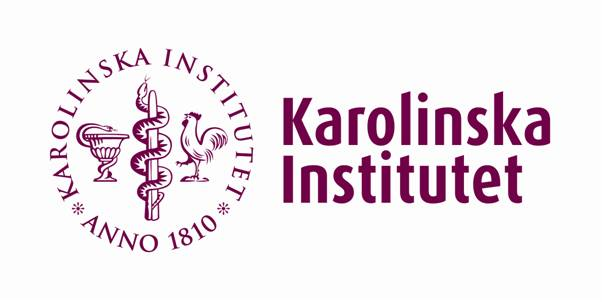 |
Queen Mary's School of Medicine and DentistryExchange StudiesERASMUS Exchange Scholarship fourth year of dental school at KI |
|
International English Gymnasium (Lyceum)Internationella Engelska GymnasietNatural Science Program: GPA 20.0/20.0 (bonus 2.5/2.5). |
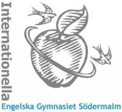 |
Extra Clinical Practice
International Federation of Medical Students' Association (IFMSA)Medical University of Vienna and the General Hospital (AKH), AustriaAdmitted to a four week medical program organized by the Medical University of Vienna for international students to shadow/assist physicians/surgeons at the General Hospital (AKH). 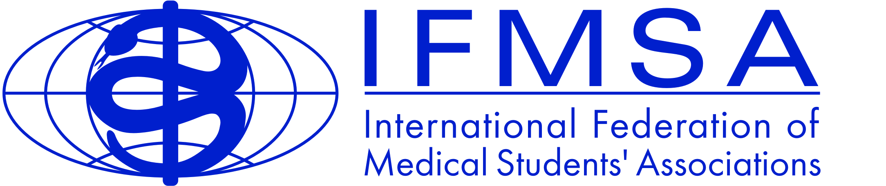 |
 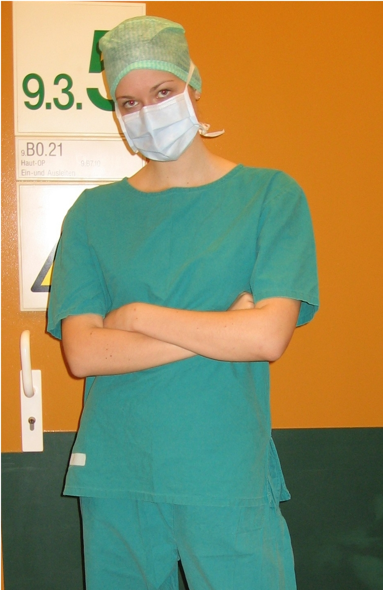
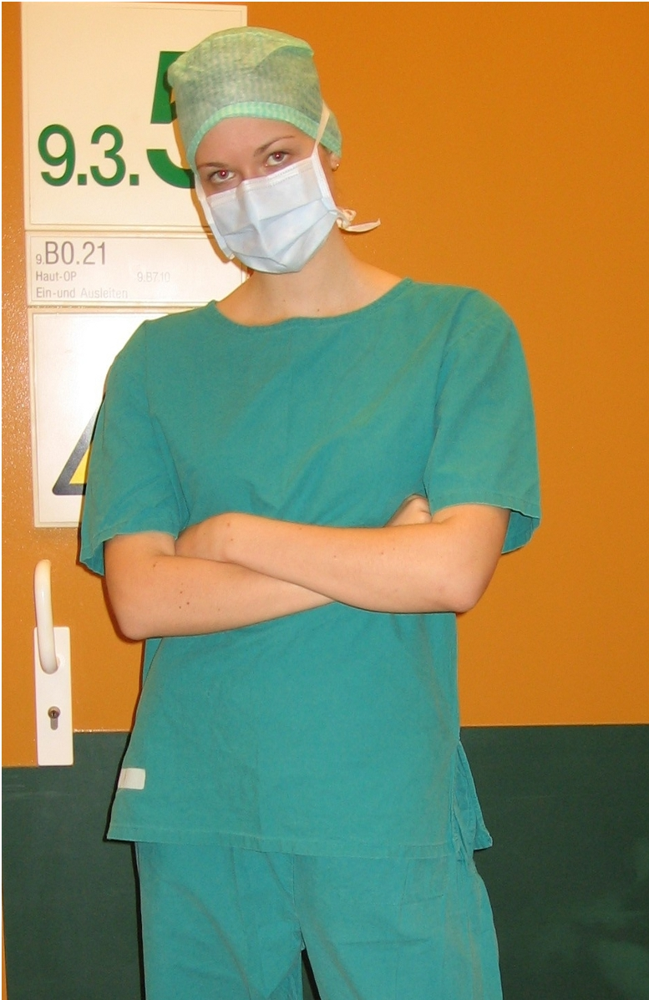
|
International Student Training Course in Dental ImplantologyMaxillofacial Federation (MFF)Chiemsee Akademie, Seebruck, Germany 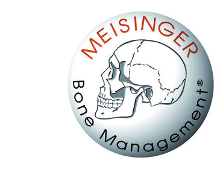 |
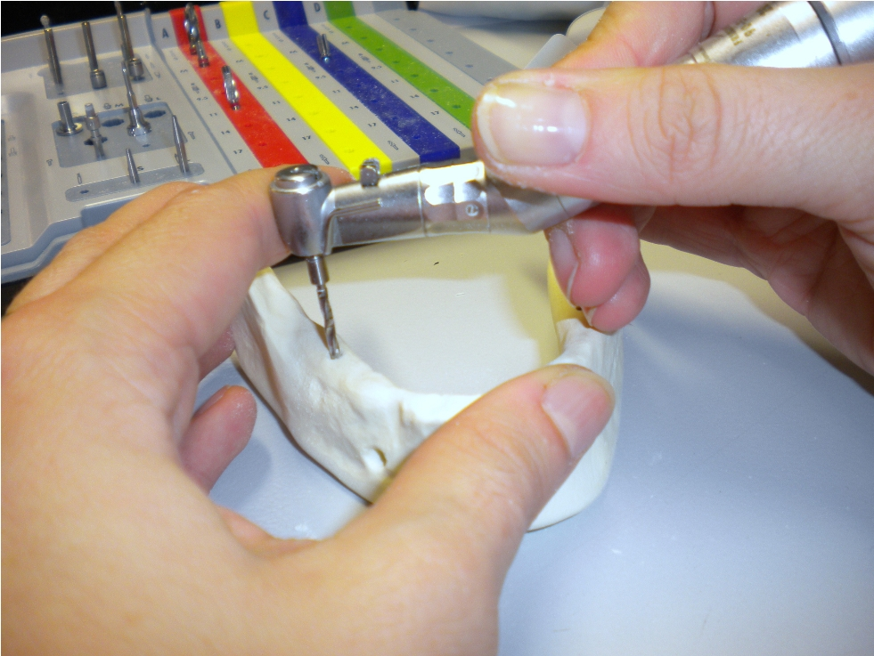 |
Awards
ERASMUS Scholarship (2011)Exchange studies in Europe provided by the European UnionRecipient of the scholarship during my fourth year of dental studies |
Valedictorian (2007)International English GymnasiumValedictorian of 2007: best student of the year out of all programs |
First Prize in a National Science Fair (2007)Federation of Young ScientistsThe Knut and Alice Wallenbergs Scholarship to attend a research program at MIT (Research Science Institute). |
Karolinska Institute
The university that selects the Nobel Prize in Medicine and PhysiologyMaster's Thesis (2012)Chronic inflammation and pain: Assessment of c-Fos and ATF-3 as markers of spinal neuronal activity in a pain model of rheumatoid arthritisI conducted the research project at the Department of Physiology and Pharmacology in the lab of Dr. Camilla Svensson. The whole project was sporadically spread over a period of two years. I was basically working on the side of my dental studies, mostly being in the lab on the other side of the capital city (north campus) on weekends and late nights. Whenever I could skip lectures to instead be working on my research - I'd do that and gain the knowledge through other students' notes and books. However, especially in the last two years of dental school, most lectures are mandatory (as they are very treatment specific with a lot of patient case studies). Also, the clinical internship was baked in in the third to fifth year, treating my own patients, and that schedule was pretty inflexible. So, whenever I could find the time to be in the lab outside of school hours, I'd go for it. Research Program in Medical Sciences (2010)Assessment of c-fos as a marker of spinal neuronal activity in a pain model of rheumatoid arthritisThis was a summer research program for talented KI students who got funding for doing research in a lab for two months. This was when I started working with Dr. Camilla Svensson (great mentor!) on a project that later became a part of my Master's Thesis. I learned doing antibody probing and immunohistochemistry, and analyzing microscopic images using the software ImageJ. It was a really exciting summer. Research Program in Biomedical Sciences (2006)Activation of Liver X Receptor affects the function and differentiation of osteoclastsThis was a six week summer research program for the top 20 smartest high school students in the country (Sweden). This was how I first got acquainted with real research at the age of 16. The first week consisted of lectures, and the remaining part was spent working in a lab. I was working with Dr. Kirsten Robertson in the Adopted Orphan Receptors Lab at the Department of Biosciences and Nutrition. The nuclear receptor that we were investigating was Liver X Recepter (LXR). Little was known about it at the time, and my project was investigating what the receptor does to bone tissue. It was a cell study, and we were looking at the bone resorption cells, namelyosteoclasts. I learned various lab techniques, such as pipetting, electrophoresis, PCR (Polymerase Chain Reaction), Real-Time PCR, and doing statistical analysis in the software Prism. I remember that summer being so overwhelming that I was determined to pursue a career in research. |
Research Science Institute
Research Science Institute (2007)What does performance on one visual search task tell you about performance on another?This was a six week international summer research program for talented high school students. It was held at Massachusetts Institute of Technology (MIT) and organized by the Center for Excellence in Education (CEE). The first week of the program consisted of classes in two science subjects of interest (in my case biology and chemistry), math, and humanities. Also we learned how to write a scientific paper in LaTeX and hold a professional presentation. The rest of the summer was spent on working in a lab. |
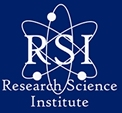

|
Rays
Since 2011Summer Research Program for Swedish High School StudentsRays is a summer research program that was founded by a Swedish RSI'06 alumn Daniel Langkilde. Rays is basically a similar program like RSI, but in Sweden. Jenny Sul (RSI'08) was also helping out in the commencement. Another alumn (me, RSI'07) helped Jenny with mentorships at KI for the first summer in 2011. However, I was unable to be a staff member that summer as I already received the ERASMUS Scholarship for studies abroad. In the fall of 2011 I joined the committee to organize mentorships at prestigious universities in Stockholm. It's so rewarding to help the next generation of talented students, especially since I've been to similar research programs myself and I know that those were the best summers of my life. 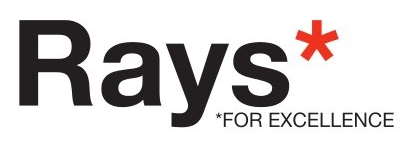 | 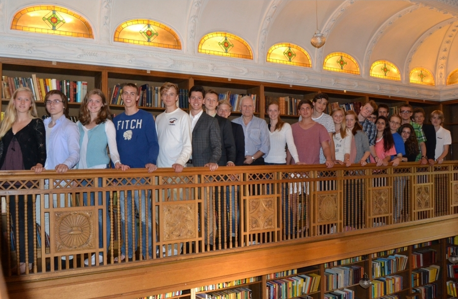 |
Förbundet Unga Forskare (FUF)
2007 - 2009Organization run by Young Scientists for High School StudentsThis is a well established organization that has been running for decades. It is functioning on a national level and has suborganizations in different regions. The main office is in Stockholm though. I was offered to join the team right after I received the First Prize in the National Science Fair. I then started working in the executive committee of Utställningsgruppen (UG) running the fair. I was in charge of lectures and event logistics at the Museum of Technology (Tekniska museet). This took place before and during my first and second year of dental school. It was a great experience to get involved in management and working in a team. | 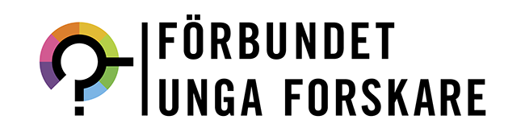 |
EDSA
2010 - 2011Organization run by Dental Students in EuropeThis organization has been around for a couple of decades and has had many successes of organized events for European students. I joined and since my passion was research I started working with the President of EDSA on this idea to have a research program for dental students internship in a different European country. I became the President and co-founder of EDSA's Research Program and was working for two years to get it started. The program was launched in 2012 and is now one of the main projects of EDSA. 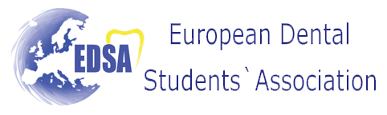 |
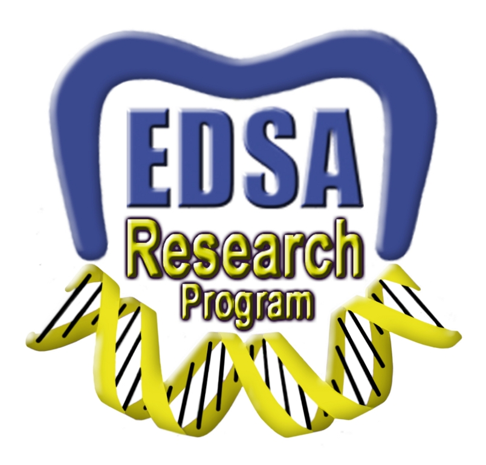 |
Robotics
2013Autonomous Robot Accomplishing Standstill Balance and Forward Motion Using Segway Technology, Royal Institute of Technology (KTH)Basically I worked in a team of five KTH electrical engineering students to deliver a functioning hardware/software prototype in less than four weeks. The code was written in C although most of the functions came from a library called ROBOTC (courtesy of Carnegie Mellon University) that was compatible with the hardware. We used Lego Mindstorms for the hardware and building components to build a little robot that would stand and balance on two wheels. The next challenge was to make it go forward, which also got accomplished. We also hacked together a compatible file that would take the standard tunes and make it play The Ride of the Valkyries by Wagner (as a geeky fun thing). We named the robot Valkyria and she is a beauty. We later took her to a fair at KTH and gave a presentation, and had her parade on the catwalk. So proud! |
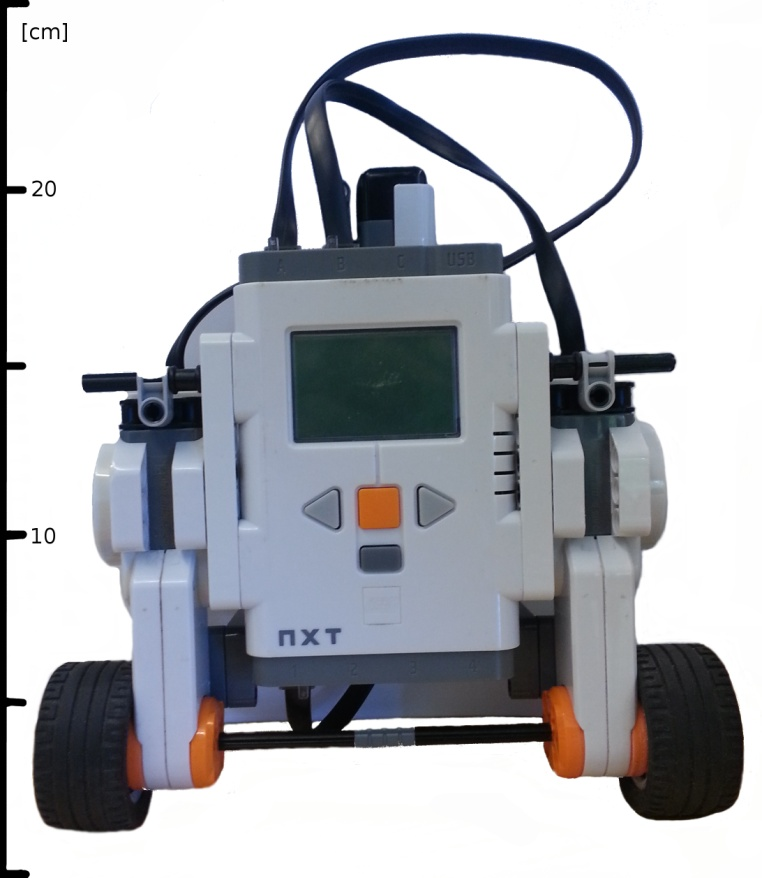 |
| 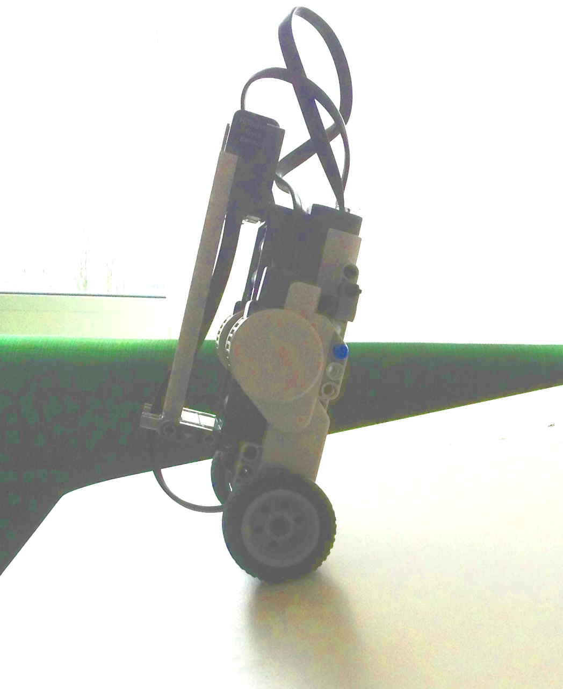 |
Bioengineering
Problems to work on in the future
Water Cooling in DentistryDecreases the visibility for dentist's and comfort for patientsWater cooling is needed when drilling or laser cutting on teeth. This is to ensure that the heat from the drill/laser doesn't kill the tooth. The suction tool used in dentistry is the only device for removing the water building up inside the patients mouth. Isn't there another solution to the overheating problem? |
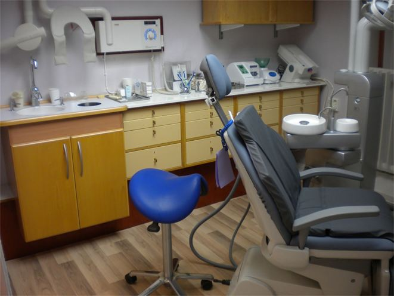 |
Ultimate X-Ray Precision During SurgerySaves time, blood, and iatrogenic injuriesGuided surgery is a relatively new field. There exists technological equipment for guiding the surgeon inside tissue via bleeping sounds. The device can interpret the 3D digital images of tissues from the X-ray images. The device also comes with a sensor that allows the software to compare reality from the 3D image. However, these devices very are expensive and in practice it's hard to say if the bleeping communication is a high order magnitude improvement of the surgeons abilities to know where to go. Our brian is still far better at visual processing than any computer of today. However, we are unable to keep the whole 3D x-ray image and superimpose it on the actual patient with very high accuracy. That computers can do very well. Why not combine these two facts, and conclude that augmented reality in surgery is the thing to go for. |
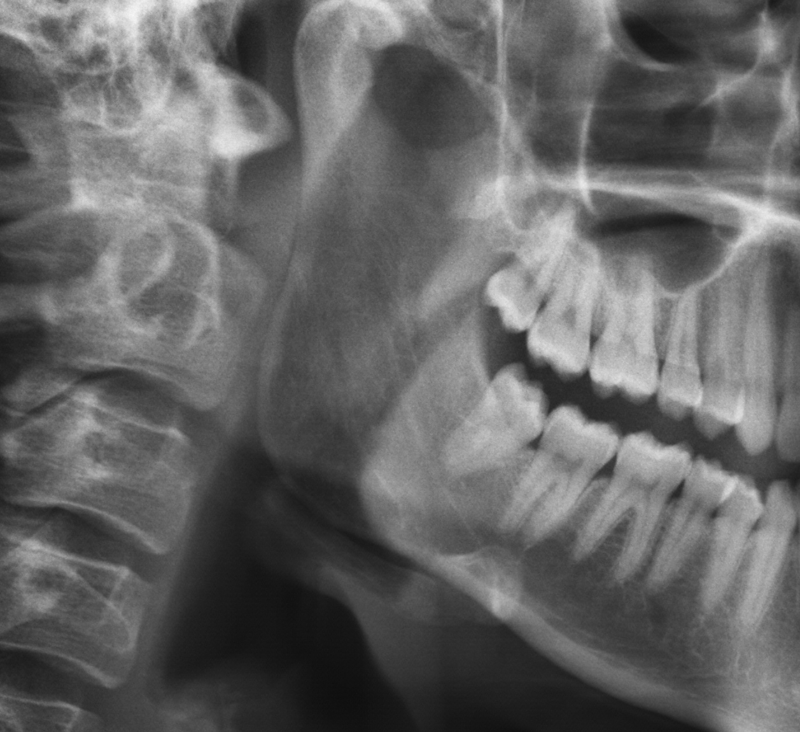 |
Contact
If you want to get in touch with me regarding the website, or if you have any questions or comments - send me a message!
Biotechnology
Computer Science
Programming experienceSkills/LanguagesPython, MATLAB, Java, ROBOTC, HTML/JS/CSS, ActionScript and LaTeX. |
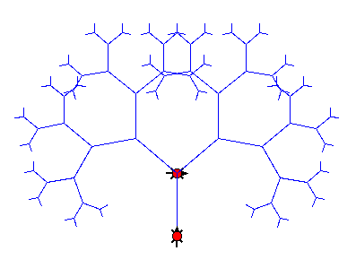
This is a graphical output in Python. The code is called TurtleWorld from Think Python: How to Think Like a Computer Scientist tutorial by Allen Downey. This was the first learning experience I had of writing fun code. |
Medicine & Dentistry
My academic backgroundDoctor of Dental Surgery (DDS)My area of interest is the development of medical devices in dentistry and surgery in general. |
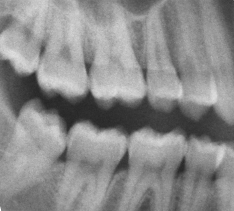
An x-ray image of teeth (no cavities). |
Electrical Engineering
My academic backgroundCurrently studying Electrical EngineeringThe tools needed to be able to construct hardware for medical devices. |
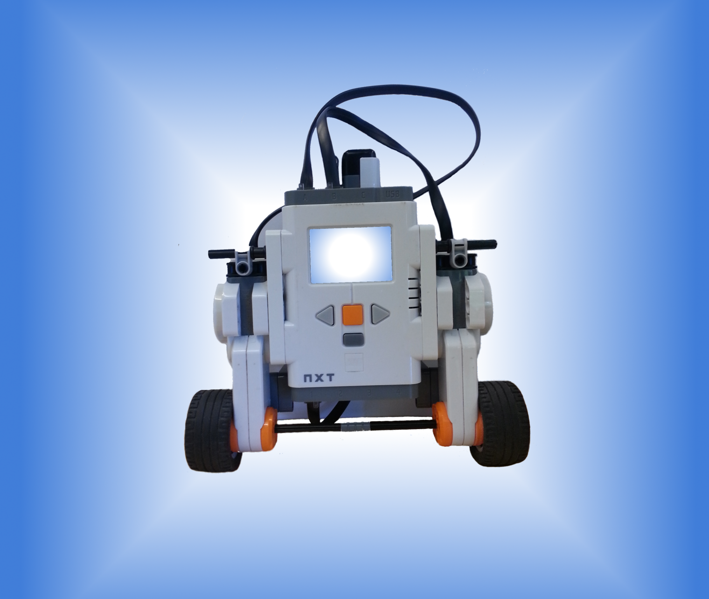
A robot that five of us electrical engineering students built. For more information regarding this project click here. |